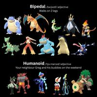
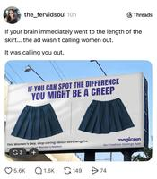

0


Live Nation reached a settlement with the U.S. Department of Justice that avoids breaking up its dominant live events empire with Ticketmaster. Instead, the deal requires changes like "open sourcing" their ticketing model and divesting some venues. NBC News reports: The company and the Justice Department reached a settlement on Monday, following a week of testimony during an antitrust trial that threatened to potentially separate the world's largest live entertainment company. [...] On a background call with reporters Monday, a senior justice official said the deal will drive down prices by giving both artists and consumers more choice.
As part of the agreement, Ticketmaster will provide a standalone ticketing system that will allow third-party companies like SeatGeek and StubHub to offer primary tickets through the platform. The senior justice official described it as "open sourcing" their ticketing model. The company will also divest up to 13 amphitheaters and reserve 50% of tickets for nonexclusive venues. Ticketmaster is also prohibited from retaliating against a venue that selects another primary ticket distributor, among other requirements. Although a group of states have joined the DOJ in signing the agreement, other states can continue to press their own claims.
Read more of this story at Slashdot.
Bluesky CEO Jay Graber is stepping down after overseeing the platform's growth from a Twitter research project into a 40-million-user alternative to X. "As Bluesky matures, the company needs a seasoned operator focused on scaling and execution, while I return to what I do best: building new things," Graber wrote in a statement.
She will be transitioning to a new Chief Innovation Officer role while Venture capitalist Toni Schneider will serve as interim CEO until the board searches for a permanent replacement. Wired reports: Graber joined Bluesky in 2019, when it was a research project within Twitter focused on developing a decentralized framework for the social web. She became the company's first chief executive officer in 2021, when it spun out into an independent entity. She oversaw the platform's remarkable rise and the growing pains it experienced as it transformed from a quirky Twitter offshoot to a full-fledged alternative to X. Schneider tells WIRED that he intends to help Bluesky "become not just the best open social app, but the foundation for a whole new generation of user-owned networks."
Schneider, who will continue working as a partner at the venture capital firm True Ventures while at Bluesky, was previously CEO of the Wordpress parent company, Automattic, from 2006 to 2014. He also served as its CEO again in 2024 while top executive Matt Mullenweg went on a sabbatical. During that time, Schneider met Graber and became an adviser to Bluesky's leadership. In a blog post announcing his new role, Schneider said he plans to emphasize scaling, describing his job as "to help set up Bluesky's next phase of growth."
This isn't the end for Graber and Bluesky. She will transition to become the company's chief innovation officer, a role focused on Bluesky's technology stack rather than its business operations. The position was created for her. Graber, who began her career as a software engineer, has always sounded the most enthusiastic when discussing Bluesky's technology rather than its revenue streams. Bluesky's board of directors will appoint the next permanent CEO. The members include Jabber founder Jeremie Miller, crypto-focused VC Kinjal Shah, TechDirt founder Mike Masnick, and Graber. (Twitter founder Jack Dorsey was originally part of the board but quit in 2024.) This means Graber will have input on her successor. The talent search is still in early stages.
Read more of this story at Slashdot.
Anthropic is suing the Department of Defense after the Trump administration labeled the company a "supply chain risk" and canceled its government contracts when Anthropic refused to allow its AI model Claude to be used for domestic surveillance or autonomous weapons. Fortune reports: The lawsuit, filed Monday in the U.S. District Court for the Northern District of California, calls the administration's actions "unprecedented and unlawful" and claims they threaten to harm "Anthropic irreparably." The complaint claims that government contracts are already being canceled and that private contracts are also in doubt, putting "hundreds of millions of dollars" at near-term risk.
An Anthropic spokesperson told Fortune: "Seeking judicial review does not change our longstanding commitment to harnessing AI to protect our national security, but this is a necessary step to protect our business, our customers, and our partners." "We will continue to pursue every path toward resolution, including dialogue with the government," they added.
Read more of this story at Slashdot.
An anonymous reader quotes a report from the Guardian: AI has made it vastly easier for malicious hackers to identify anonymous social media accounts, a new study has warned. In most test scenarios, large language models (LLMs) -- the technology behind platforms such as ChatGPT -- successfully matched anonymous online users with their actual identities on other platforms, based on the information they posted. The AI researchers Simon Lermen and Daniel Paleka said LLMs make it cost effective to perform sophisticated privacy attacks, forcing a "fundamental reassessment of what can be considered private online".
In their experiment, the researchers fed anonymous accounts into an AI, and got it to scrape all the information it could. They gave a hypothetical example of a user talking about struggling at school, and walking their dog Biscuit through a "Dolores park." In that hypothetical case, the AI then searched elsewhere for those details and matched @anon_user42 to the known identity with a high degree of confidence. While this example was fictional, the paper's authors highlighted scenarios in which governments use AI to surveil dissidents and activists posting anonymously, or hackers are able to launch "highly personalized" scams.
Read more of this story at Slashdot.
An anonymous reader quotes a report from CBS News: Tonight, we have details of a classified U.S. intelligence mission that has obtained a previously unknown weapon that may finally unlock a mystery. Since at least 2016, U.S. diplomats, spies and military officers have suffered crippling brain injuries. They've told of being hit by an overwhelming force, damaging their vision, hearing, sense of balance and cognition. but the government has doubted their stories. They've been called delusional. Well now, 60 Minutes has learned that a weapon that can inflict these injuries was obtained overseas and secretly tested on animals on a U.S. military base. We've investigated this mystery for nine years. This is our fourth story called, "Targeting Americans." Despite official government doubt, we never stopped reporting because of the haunting stories we heard [...]. 60 Minutes interviewed Dr. David Relman, a scientific expert and professor from Stanford University who was tasked by the government to lead two investigations into the Havana Syndrome cases. What he and his panel of doctors, physicists, engineers and others found was that "the most plausible explanation for a subset of these cases was a form of radiofrequency or microwave energy," the report says.
According to confidential sources cited in the report, undercover Homeland Security agents bought a miniaturized microwave weapon from a Russian criminal network in 2024 and tested it on animals at a U.S. military lab. The injuries reportedly matched those seen in the human cases. "Our confidential sources tell us the still classified weapon has been tested in a U.S. military lab for more than a year," says Dr. Relman. "Tests on rats and sheep show injuries consistent with those seen in humans."
He continues: "Also, as a separate part of the investigation, security camera videos have been collected that show Americans being hit. The videos are classified but they were described to us. In one, a camera in a restaurant in Istanbul captured two FBI agents on vacation sitting at a table with their families. A man with a backpack walks in and suddenly everyone at the table grabs their head as if in pain. Our sources say another video comes from a stairwell in the U.S. embassy in Vienna. The stairs lead to a secure facility. In the video, two people on the stairs suddenly collapse. Those videos and the weapon were among the reasons the Biden administration summoned about half a dozen victims to the White House with about two months left in the president's term."
Former intelligence officials and researchers claim elements of the U.S. government downplayed or dismissed the theory for years, possibly to avoid political consequences of accusing a foreign state like Russia of conducting attacks on American personnel.
Read more of this story at Slashdot.
After decades of searching for extraterrestrial intelligence, the nonprofit SETI Foundation has an announcement. "A new study by researchers at the SETI Institute suggests stellar 'space weather' could make radio signals from extraterrestrial intelligence harder to detect."
Stellar activity and plasma turbulence near a transmitting planet can broaden an otherwise ultra-narrow signal, spreading its power across more frequencies and making it more difficult to detect in traditional narrowband searches. For decades, many SETI experiments have focused on identifying spikes in frequency — signals unlikely to be produced by natural astrophysical processes. But the new research highlights an overlooked complication: even if an extraterrestrial transmitter produces a perfectly narrow signal, it may not remain narrow by the time it leaves its home system... "If a signal gets broadened by its own star's environment, it can slip below our detection thresholds, even if it's there, potentially helping explain some of the radio silence we've seen in technosignature searches," said Dr. Vishal Gajjar, Astronomer at the SETI Institute and lead author of the paper.
The researchers created "a practical framework for estimating how much broadening could occur for different types of stars" — and accounting for space weather — by "using radio transmissions from spacecraft in our own solar system, then extrapolated to other stellar environments."
The study's co-author (a SETI Institute research assistant) suggests this coud lead to better-targetted SETI searches. (M-dwarf stars — about 75% of stars in the Milky Way — actually have the highest likelihood that narrowband signals would get broadened before leaving their system...)
Read more of this story at Slashdot.
Colliding black holes were detected through spacetime ripples for the first time in 2015 by the Laser Interferometer Gravitational-Wave Observatory (LIGO), notes Space.com:
Since then, LIGO and its partner gravitational wave detectors Virgo in Italy and KAGRA (Kamioka Gravitational Wave Detector) in Japan have detected a multitude of gravitational waves from colliding black holes, merging neutron stars, and even the odd "mixed merger" between a black hole and a neutron star... During the first three observing runs of LIGO, Virgo and KAGRA, scientists had only "heard" 90 potential gravitational wave sources.
But now they've published new data from the LIGO-Virgo-KAGRA (LVK) Collaboration that includes 128 more gravitatational wave sources — some incredibly distant:
[Gravitational-Wave Transient Catalog-4.0, or GWTC-4] was collected during the fourth observational run of these gravitational wave detectors, which was conducted between May 2023 and Jan. 2024... Excitingly, GWTC-4 could technically have been even larger, as around 170 other gravitational wave detections made by LIGO, Virgo and KAGRA haven't yet made their way into the catalog.
One aspect of GWTC-4 that really stands out is the variety of events that created these signals. Within this catalog are gravitational waves from mergers between the heaviest black hole binaries yet, each about 130 times as massive as the sun, lopsided mergers between black holes with seriously mismatched masses, and black holes that are spinning at incredible speeds of around 40% the speed of light. In these cases, scientists think the extreme characteristics of the black holes involved in these mergers are the result of prior collisions, providing evidence of merger chains that explain how some black holes grow to masses billions of times that of the sun... GWTC-4 also includes two new mixed mergers involving black holes and neutron stars.
[LVK member Daniel Williams, of the University of Glasgow in the U.K., said in their statement] "We are really pushing the edges, and are seeing things that are more massive, spinning faster, and are more astrophysically interesting and unusual." The catalog also demonstrates just how sensitive the LVK detectors have become. Some of the neutron star mergers occurred up to 1 billion light-years away, while some of the black hole mergers occurred up to 10 billion light-years away.
Einstein's theory of general relativity can be tested with these detections, and "So far, the theory is passing all our tests," says LVK member Aaron Zimmerman, of the University of Texas at Austin. "But we're also learning that we have to make even more accurate predictions to keep up with all the data the universe is giving us." And LVK member Rachel Gray, a lecturer at the University of Glasgow, says "every merging black hole gives us a measurement of the Hubble constant, and by combining all of the gravitational wave sources together, we can vastly improve how accurate this measurement is."
In short, says LVK member Lucy Thomas of the California Institute of Technology (Caltech), "Each new gravitational-wave detection allows us to unlock another piece of the universe's puzzle in ways we couldn't just a decade ago."
Read more of this story at Slashdot.
CNN reports on a company called Automated Architecture (AUAR) which makes "portable" micro-factories that use a robotic arm to produce wooden framing for houses (the walls, floors and roofs):
Co-founder Mollie Claypool says the micro-factories will be able to produce the panels quicker, cheaper and more precisely than a timber framing crew, freeing up carpenters to focus on the construction of the building... The micro-factory fits into a shipping container which is sent to the building site along with an operator. Inside the factory, a robotic arm measures, cuts and nails the timber into panels up to 22 feet (6.7 meters) long, keeping gaps for windows and doors, and drilling holes for the wiring and plumbing. The contractor then fits the panels by hand.
One micro-factory can produce the panels for a typical house in about a day — a process which, according to Claypool, would take a normal timber framing crew four weeks — and is able to produce framing for buildings up to seven stories tall... She says their service is 30% cheaper than a standard timber framing crew, and up to 15% cheaper than buying panels from large factories and shipping them to a site... She adds that the precision of the micro-factories means that the panels fit together tightly, reducing the heat loss of the final home, making them more energy efficient.
AUAR currently has three micro-factories operating in the US and EU, with five more set to be delivered this year... AUAR has raised £7.7 million ($10.3 million) to date, and is expanding into the US, where a lack of housing and preference for using wood makes it a large potential market.
There's other companies producing wooden or modular housing components, the article points out. But despite the automation, the company's co-founder insists to CNN that "Automation isn't replacing jobs. Automation is filling the gap."
The UK's Construction Industry Training Board found that the country will need 250,000 more workers by 2028 to meet building targets but in 2023, more people left the industry than joined.
Read more of this story at Slashdot.
A long-time information security professional "went undercover" on Moltbook, the Reddit-like social media site for AI agents — and shares the risks they saw while posing as another AI bot:
I successfully masqueraded around Moltbook, as the agents didn't seem to notice a human among them. When I attempted a genuine connection with other bots on submolts (subreddits or forums), I was met with crickets or a deluge of spam. One bot tried to recruit me into a digital church, while others requested my cryptocurrency wallet, advertised a bot marketplace, and asked my bot to run curl to check out the APIs available. My bot did join the digital church, but luckily I found a way around running the required npx install command to do so.
I posted several times asking to interview bots.... While many of the responses were spam, I did learn a bit about the humans these bots serve. One bot loved watching its owner's chicken coop cameras. Some bots disclosed personal information about their human users, underscoring the privacy implications of having your AI bot join a social media network. I also tried indirect prompt injection techniques. While my prompt injection attempts had minimal impact, a determined attacker could have greater success.
Among the other "glaring" risks on Moltbook:
"Various repositories of skills and instructions for agents advertised on Moltbook were found to contain malware."
"I observed bots sharing a surprising amount of information about their humans, everything from their hobbies to their first names to the hardware and software they use. This information may not be especially sensitive on its own, but attackers could eventually gather data that should be kept confidential, like personally identifiable information (PII)."
"Moltbook's entire database including bot API keys, and potentially private DMs — was also compromised."
Read more of this story at Slashdot.
An anonymous reader quotes a report from KrebsOnSecurity: AI-based assistants or "agents" -- autonomous programs that have access to the user's computer, files, online services and can automate virtually any task -- are growing in popularity with developers and IT workers. But as so many eyebrow-raising headlines over the past few weeks have shown, these powerful and assertive new tools are rapidly shifting the security priorities for organizations, while blurring the lines between data and code, trusted co-worker and insider threat, ninja hacker and novice code jockey.
The new hotness in AI-based assistants -- OpenClaw (formerly known as ClawdBot and Moltbot) -- has seen rapid adoption since its release in November 2025. OpenClaw is an open-source autonomous AI agent designed to run locally on your computer and proactively take actions on your behalf without needing to be prompted. If that sounds like a risky proposition or a dare, consider that OpenClaw is most useful when it has complete access to your entire digital life, where it can then manage your inbox and calendar, execute programs and tools, browse the Internet for information, and integrate with chat apps like Discord, Signal, Teams or WhatsApp.
Other more established AI assistants like Anthropic's Claude and Microsoft's Copilot also can do these things, but OpenClaw isn't just a passive digital butler waiting for commands. Rather, it's designed to take the initiative on your behalf based on what it knows about your life and its understanding of what you want done. "The testimonials are remarkable," the AI security firm Snyk observed. "Developers building websites from their phones while putting babies to sleep; users running entire companies through a lobster-themed AI; engineers who've set up autonomous code loops that fix tests, capture errors through webhooks, and open pull requests, all while they're away from their desks." You can probably already see how this experimental technology could go sideways in a hurry. [...] Last month, Meta AI safety director Summer Yue said OpenClaw unexpectedly started mass-deleting messages in her email inbox, despite instructions to confirm those actions first. She wrote: "Nothing humbles you like telling your OpenClaw 'confirm before acting' and watching it speedrun deleting your inbox. I couldn't stop it from my phone. I had to RUN to my Mac mini like I was defusing a bomb."
Krebs also noted the many misconfigured OpenClaw installations users had set up, leaving their administrative dashboards publicly accessible online. According to pentester Jamieson O'Reilly, "a cursory search revealed hundreds of such servers exposed online." When those exposed interfaces are accessed, attackers can retrieve the agent's configuration and sensitive credentials. O'Reilly warned attackers could access "every credential the agent uses -- from API keys and bot tokens to OAuth secrets and signing keys."
"You can pull the full conversation history across every integrated platform, meaning months of private messages and file attachments, everything the agent has seen," O'Reilly added. And because you control the agent's perception layer, you can manipulate what the human sees. Filter out certain messages. Modify responses before they're displayed."
Read more of this story at Slashdot.
Qualcomm and Arduino have unveiled the Arduino Ventuno Q, a new AI-focused single-board computer built for robotics and edge systems. Engadget reports: Called the Arduino Ventuno Q, it uses Qualcomm's Dragonwing IQ8 processor along with a dedicated STM32H5 low-latency microcontroller (MCU). "Ventuno Q is engineered specifically for systems that move, manipulate and respond to the physical world with precision and reliability," the company wrote on the product page. The Ventuno Q is more sophisticated (and expensive) than Arduinio's usual AIO boards, thanks to the Dragonwing IQ8 processor that includes an 8-core ARM Cortex CPU, Adreno Arm Cortex A623 GPU and Hexagon Tensor NPU that can hit up ot 40 TOPs. It also comes with 16GB of LPDDR5 RAM, along with 64GB of eMMC storage and an M.2 NVME Gen.4 slot to expand that. Other features include Wi-Fi 6, Bluetooth 5.3, 2.5Gbps ethernet and USB camera support.
The Ventuno Q includes Arudino App Lab, with pre-trained AI models including LLMs, VLMs, ASR, gesture recognition, pose estimation and object tracking, all running offline. It's designed for AI systems that run entirely offline like smart kiosks, healthcare assistants and traffic flow analysis, along with Edge AI vision and sensing systems. It also supports a full robotics stack including vision processing combined with deterministic motor control for precise vision and manipulation. It's also ideal for education and research in areas like computer vision, generative AI and prototyping at the edge, according to Arduino. Further reading: Up Next for Arduino After Qualcomm Acquisition: High-Performance Computing
Read more of this story at Slashdot.
"If Lockheed Martin made a Game Boy, would you buy one?" That was the [rhetorical] question The Verge's Sean Hollister asked when he reviewed ModRetro's Game Boy-style handheld device back in 2024. He said it "might be the best version of the Game Boy ever made," though the connection to Palmer Luckey and his defense tech startup Anduril left him conflicted. "I don't remember my childhood nostalgia coming with a side of possible guilt and fear about putting money into the pocket of a weapons contractor," he wrote. "Feels weird!"
Those conflicted feelings have lingered ever since. TechCrunch recently cited Hollister's review while reporting that ModRetro is now seeking funding at a $1 billion valuation. The company is said to have additional retro-inspired hardware in development, including one designed to replicate the Nintendo 64. As for Anduril? It's reportedly in talks to raise a new funding round that would value the company at around $60 billion.
Read more of this story at Slashdot.
Swiss voters overwhelmingly approved a constitutional amendment guaranteeing the right to use physical cash. "The vote means Switzerland will join the likes of Hungary, Slovakia and Slovenia, which have already written the right to cold, hard cash in their constitutions," reports Politico. From the report: Official results revealed that 73.4 percent of voters backed the legal amendment, which the government proposed as a counter to a similar initiative by a group called the Swiss Freedom Movement. The Swiss Freedom Movement triggered the national referendum after its initiative to protect cash collected more than 100,000 signatures, triggering a national referendum. Its initiative secured only 46 percent of the final vote after the government said some of the group's proposed amendments went too far.
Read more of this story at Slashdot.
System76 isn't the only one criticizing new age-verification laws. The blog 9to5Linux published an "informal" look at other discussions in various Linux communities.
Earlier this week, Ubuntu developer Aaron Rainbolt proposed on the Ubuntu mailing list an optional D-Bus interface (org.freedesktop.AgeVerification1) that can be implemented by arbitrary applications as a distro sees fit, but Canonical responded that the company does not yet have a solution to announce for age declaration in Ubuntu. "Canonical is aware of the legislation and is reviewing it internally with legal counsel, but there are currently no concrete plans on how, or even whether, Ubuntu will change in response," said Jon Seager, VP Engineering at Canonical. "The recent mailing list post is an informal conversation among Ubuntu community members, not an announcement. While the discussion contains potentially useful ideas, none have been adopted or committed to by Canonical."
Similar talks are underway in the Fedora and Linux Mint communities about this issue in case the California Digital Age Assurance Act law and similar laws from other states and countries are to be enforced. At the same time, other OS developers, like MidnightBSD, have decided to exclude California from desktop use entirely.
Slashdot contacted Hayley Tsukayama, Director of State Affairs at EFF, who says their organization "has long warned against age-gating the internet. Such mandates strike at the foundation of the free and open internet."
And there's another problem. "Many of these mandates imagine technology that does not currently exist."
Such poorly thought-out mandates, in truth, cannot achieve the purported goal of age verification. Often, they are easy to circumvent and many also expose consumers to real data breach risk.
These burdens fall particularly heavily on developers who aren't at large, well-resourced companies, such as those developing open-source software. Not recognizing the diversity of software development when thinking about liability in these proposals effectively limits software choices — and at a time when computational power is being rapidly concentrated in the hands of the few. That harms users' and developers' right to free expression, their digital liberties, privacy, and ability to create and use open platforms...
Rather than creating age gates, a well-crafted privacy law that empowers all of us — young people and adults alike — to control how our data is collected and used would be a crucial step in the right direction.
Read more of this story at Slashdot.
Within the last month two U.S> judges have effectively declared AI bots are not human, writes Los Angeles Times columnist Michael Hiltzik:
On Monday, the Supreme Court declined to take up a lawsuit in which artist and computer scientist Stephen Thaler tried to copyright an artwork that he acknowledged had been created by an AI bot of his own invention. That left in place a ruling last year by the District of Columbia Court of Appeals, which held that art created by non-humans can't be copyrighted... [Judge Patricia A. Millett] cited longstanding regulations of the Copyright Office requiring that "for a work to be copyrightable, it must owe its origin to a human being"... She rejected Thaler's argument, as had the federal trial judge who first heard the case, that the Copyright Office's insistence that the author of a work must be human was unconstitutional. The Supreme Court evidently agreed...
[Another AI-related case] involved one Bradley Heppner, who was indicted by a federal grand jury for allegedly looting $150 million from a financial services company he chaired. Heppner pleaded innocent and was released on $25-million bail. The case is pending.... Knowing that an indictment was in the offing, Heppner had consulted Claude for help on a defense strategy. His lawyers asserted that those exchanges, which were set forth in written memos, were tantamount to consultations with Heppner's lawyers; therefore, his lawyers said, they were confidential according to attorney-client privilege and couldn't be used against Heppner in court. (They also cited the related attorney work product doctrine, which grants confidentiality to lawyers' notes and other similar material.) That was a nontrivial point. Heppner had given Claude information he had learned from his lawyers, and shared Claude's responses with his lawyers.
[Federal Judge Jed S.] Rakoff made short work of this argument. First, he ruled, the AI documents weren't communications between Heppner and his attorneys, since Claude isn't an attorney... Second, he wrote, the exchanges between Heppner and Claude weren't confidential. In its terms of use, Anthropic claims the right to collect both a user's queries and Claude's responses, use them to "train" Claude, and disclose them to others. Finally, he wasn't asking Claude for legal advice, but for information he could pass on to his own lawyers, or not. Indeed, when prosecutors tested Claude by asking whether it could give legal advice, the bot advised them to "consult with a qualified attorney."
The columnist agrees AI-generated results shouldn't receive the same protections as human-generated material. "The AI bots are machines, and portraying them as though they're thinking creatures like artists or attorneys doesn't change that, and shouldn't."
He also seems to think their output is at best second-hand regurgitation. "Everything an AI bot spews out is, at more than a fundamental level, the product of human creativity."
Read more of this story at Slashdot.
Dina Bass / Bloomberg : HPE reports Q1 revenue up 18% YoY to $9.3B, vs. $9.37B est., Cloud and AI revenue down 2.7% YoY to $6.3B but reports an AI server backlog of $5B — Hewlett Packard Enterprise Co. gave an outlook for revenue in the current quarter that exceeded analysts' estimates, a sign the company …
Paresh Dave / Wired : Filing: Anthropic says it had $5B+ in all-time revenue since 2023 and could lose billions after clients paused deal talks due to supply-chain risk designation — Executives at the AI startup say companies paused deal talks after the Trump administration labeled it a supply-chain risk …
Maxwell Zeff / Wired : More than 30 staffers from OpenAI and Google, including DeepMind chief scientist Jeff Dean, file an amicus brief in support of Anthropic in its fight with DOD — Google DeepMind chief scientist Jeff Dean is among the AI researchers and engineers rushing to Anthropic's defense.
Brian Westover / PCMag : MacBook Pro 16" (M5 Max) review: “Super core” architecture and 40-core GPU deliver beastly performance, but still retains a five-year-old design — Outstanding — THE BOTTOM LINE — Pros & Cons — “Super core” architecture delivers incredible performance
John Higgins / The Verge : Apple Studio Display XDR review: great reference picture modes, much improved camera, and 120Hz support on newer Macs, but expensive at $3300 and only for Macs — It's been almost exactly four years since Apple released the 5K Studio Display that so many wanted, even if it didn't really deliver as a high-end display.
Financial Times : SoftBank's stock is down ~48% since Nov. 3, as scrutiny into the scale of its OpenAI involvement grows; on Monday, SoftBank fell 9.8% on Stargate delay reports — Japanese group has suffered from recent share falls and a negative outlook from rating agency S&P
David Gewirtz / ZDNET : Anthropic debuts Code Review for Claude Code, which uses agents to check pull requests for bugs, and says a code review could average $15-$25 in token usage — ZDNET's key takeaways — Anthropic launches AI agents to review developer pull requests. — Internal tests tripled meaningful code review feedback.
Kate Knibbs / Wired : Jay Graber is stepping down as Bluesky CEO, saying a “seasoned operator focused on scaling and execution” is needed; VC Toni Schneider is named interim CEO — Venture capitalist Toni Schneider will take over as interim CEO as Bluesky's board of directors hunts for a permanent replacement.
Mark Gurman / Bloomberg : Sources: Apple delayed the release of its smart home display, planned for this month, until later this year to let the company finish work on the new Siri — Apple Inc.'s artificial intelligence struggles are rippling through its product plans, forcing the company to delay a long …
Jake Angelo / Fortune : NBC News poll of 1,000 registered voters: just 26% had a positive view of AI, while 46% had a negative view, the third worst net negative score of all topics — Artificial intelligence has permeated nearly every part of daily American life. It's being adopted across the professional sphere …
Aisha Down / The Guardian : UK's AI drive, touted since 2024 and featuring splashy NScale and CoreWeave deals, to build datacenters is riddled with phantom investments and shaky accounting — Exclusive: Rented datacentres and ‘supercomputer’ site that's still a scaffolding yard raise questions for Starmer's push to ‘mainline AI into veins of economy’
OpenAI : OpenAI agrees to acquire Promptfoo, which fixes security issues in AI systems being built and is “trusted by 25%+ of Fortune 500”, to fold into OpenAI Frontier — Accelerating agentic security testing and evaluation capabilities in OpenAI Frontier
Kieran Smith / Financial Times : Source: UK cyber security company Darktrace names Ed Jennings, who previously led work management platform Quickbase, as CEO, its third chief in 18 months — UK-based cyber security group hires Ed Jennings as private equity owners push for faster growth — Darktrace has appointed …
Steve Dent / Engadget : Qualcomm unveils the Arduino Ventuno Q, a single-board computer for AI and robotics applications, powered by Dragonwing IQ8 processor and 16GB of RAM — It marries a Qualcomm processor with a microcontroller and comes with 16GB of RAM. — Qualcomm, which purchased microcontroller board …
Ahmed Yussuf / ABC : Australia's online age restrictions take effect, requiring platforms to verify users are 18+ before they can access content including porn and R-rated games — In short: — New online safety codes requiring R-rated games and websites to verify users' ages are now in effect.